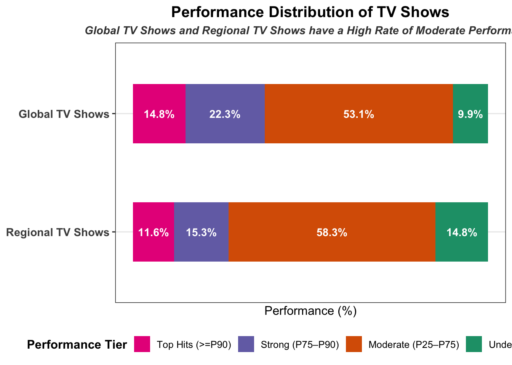

Mini-Project 1: What We Watched: Exploring Netflix Viewing Data
Author
Naaz Parvaz
Netflix Logo
1 Data Acquisition, Cleaning & Preparation
(Tasks 1-3)
Code
#Task 1: Data Acquisition#' Acquire Netflix What We Watched Reports#' #' This function will acquire and standardize all data for MP#01#' from Netflix. Because Netflix hosts the data files behind a CDN, we#' are accessing the release pages and automatically extracting links to the#' relevant files (with CDN hash). #' #' After import, files are stacked vertically and some basic cleaning is#' performed. load_netflix_data <-function(){# Note to students: Make sure you have installed the tidyverse and fs packages# before beginning this assignment. If you aren't sure,# simply run `library(tidyverse)` at your R Console and, if# you don't see an error message, `tidyverse` has been # installed. (Same for `fs`) If you still need to install# either package, use the `install.packages` function as # demonstrated in class.library(tidyverse)library(rvest)library(readxl)library(fs) data_dir <-path("data", "mp01")if(!dir_exists(data_dir)){dir_create(data_dir, showWarnings=FALSE, recurse=TRUE) } NETFLIX_URLS <-list(`2023H1`="https://about.netflix.com/news/what-we-watched-a-netflix-engagement-report",`2023H2`="https://about.netflix.com/news/what-we-watched-the-second-half-of-2023",`2024H1`="https://about.netflix.com/news/what-we-watched-the-first-half-of-2024",`2024H2`="https://about.netflix.com/news/what-we-watched-the-second-half-of-2024",`2025H1`="https://about.netflix.com/news/what-we-watched-the-first-half-of-2025",`2025H2`="https://about.netflix.com/news/what-we-watched-the-second-half-of-2025",`2026H1`="https://about.netflix.com/news/what-we-watched-the-first-half-of-2026" ) download_if_needed <-function(url, local){if(!file_exists(local)){download.file(url, local, quiet =TRUE, mode ="wb") }return(local) } NETFLIX_URLS |>map(read_html) |>map(html_element, xpath ="//a[contains(@href, '.xlsx')]") |>map_chr(html_attr, "href") |>enframe("period", "url") |>mutate(path =path(data_dir, paste0(period, ".xlsx")), path =map2(url, path, download_if_needed), data =map(path, read_excel, skip=3, na="*"), data =map(data, \(x) x |>mutate(`Release Date`=as.Date(`Release Date`)))) |>unnest(data) |>select(-url, -path) |>mutate(year=str_sub(period, 1, 4), half=str_sub(period, start=6), period_start =make_date(year, if_else(half==1, 1, 7), 1), period_end =make_date(year, if_else(half==1, 7, 12), if_else(half==1, 30, 31))) |>filter(!is.na(`Hours Viewed`)) |>mutate(live_event =!is.na(Runtime) &str_detect(Runtime, "\\d+:\\d+\\*"), clean_time =str_remove(Runtime, fixed("*")),Runtime =60*hour(hm(clean_time)) +minute(hm(clean_time))) |>select(-clean_time) |>mutate(Runtime =coalesce(Runtime, mean(Runtime, na.rm=TRUE)), .by=Title, Title = stringi::stri_trans_general(Title, "Latin-ASCII"),Title =str_remove(Title, " // .*"), Title =str_remove(Title, "[^[:ascii:]].*"), Title =str_trim(Title)) |>filter_out(Title =="") |>select(year, period, period_start, period_end, Title, -half, Runtime, Views, `Hours Viewed`, `Release Date`,`Available Globally?`, live_event)}# Task 2: Fix Column TitlesNETFLIX_DATA <-load_netflix_data()NETFLIX_DATA <- NETFLIX_DATA |>rename(title = Title,runtime = Runtime,views = Views,hours_viewed =`Hours Viewed`,release_date =`Release Date`,available_globally =`Available Globally?` )#Task 3: Fix Column TypesNETFLIX_DATA <- NETFLIX_DATA |>mutate(year =as.integer(year),available_globally = available_globally =="Yes" )
2 Initial Data Exploration
2.1 Task 4: Initial EDA
NETFLIX_DATA |>slice_sample(n =10)
# A tibble: 10 × 11
year period period_start period_end title runtime views hours_viewed
<int> <chr> <date> <date> <chr> <dbl> <dbl> <dbl>
1 2026 2026H1 2026-01-01 2026-07-30 Seinfeld: … 556 3300000 30600000
2 2023 2023H1 2023-01-01 2023-07-30 World Dice… 827 NA 10200000
3 2023 2023H2 2023-07-01 2023-12-31 Heartland … 811 500000 7200000
4 2023 2023H1 2023-01-01 2023-07-30 Black Bear NA NA 100000
5 2024 2024H2 2024-07-01 2024-12-31 Total Dram… 573 100000 700000
6 2023 2023H1 2023-01-01 2023-07-30 Quanto Tem… NA NA 100000
7 2023 2023H1 2023-01-01 2023-07-30 The Land B… NA NA 300000
8 2025 2025H2 2025-07-01 2025-12-31 Unbelievab… 389 3300000 21200000
9 2024 2024H2 2024-07-01 2024-12-31 Skylanders… 312 300000 1500000
10 2026 2026H1 2026-01-01 2026-07-30 Blue Mount… 282 400000 1700000
# ℹ 3 more variables: release_date <date>, available_globally <lgl>,
# live_event <lgl>
skimr::skim(NETFLIX_DATA)
Data summary
Name
NETFLIX_DATA
Number of rows
61892
Number of columns
11
_______________________
Column type frequency:
character
2
Date
3
logical
2
numeric
4
________________________
Group variables
None
Variable type: character
skim_variable
n_missing
complete_rate
min
max
empty
n_unique
whitespace
period
0
1
6
6
0
7
0
title
0
1
1
217
0
24427
0
Variable type: Date
skim_variable
n_missing
complete_rate
min
max
median
n_unique
period_start
0
1.00
2023-01-01
2026-01-01
2024-01-01
7
period_end
0
1.00
2023-07-30
2026-07-30
2024-07-30
7
release_date
35251
0.43
2010-04-01
2026-06-29
2021-06-17
2487
Variable type: logical
skim_variable
n_missing
complete_rate
mean
count
available_globally
2
1
0.35
FAL: 40171, TRU: 21719
live_event
0
1
0.01
FAL: 61582, TRU: 310
Variable type: numeric
skim_variable
n_missing
complete_rate
mean
sd
p0
p25
p50
p75
p100
hist
year
0
1.00
2024.11
1.08
2023
2023
2024
2025
2026
▇▅▁▅▂
runtime
13085
0.79
467.35
694.71
2
210
320
545
23853
▇▁▁▁▁
views
18198
0.71
1375241.45
3630933.22
100000
100000
400000
1200000
144800000
▇▁▁▁▁
hours_viewed
0
1.00
8265858.27
24924226.03
100000
500000
1800000
6400000
964100000
▇▁▁▁▁
2.2 Task 5: Exploratory Questions - Inline Values
Question 1: What date range is covered by this data set?
# A tibble: 1 × 1
total_hours_viewed_bridgerton
<dbl>
1 4862800000
A total of 4,862,800,000 hours have been spent watching shows from the Bridgerton universe.
Question 4: How many total hours have been spent watching the five seasons of Stranger Things?
# For this question, we only want the “real” *Stranger Things* shows and not the companion behind-the-scenes show (“Beyond Stranger Things”), the animated spin-off (“Tales from ’85”), or the background music (“Stranger Things: Fireplace”).NETFLIX_DATA |>filter(str_detect(title, "Stranger Things")) |>filter_out(str_detect(title, "Beyond")) |>filter_out(str_detect(title, "Fireplace")) |>filter_out(str_detect(title, "Tales From")) |>summarise(total_hours_viewed =sum(hours_viewed) )
# A tibble: 1 × 1
total_hours_viewed
<dbl>
1 5548500000
A total of 5,548,500,000 hours have been spent watching the five seasons of Stranger Things excluding the BTS, spin-off and background music.
Question 5: What percentage of total watch time was spent on the Top 10 titles of 2026H1?
# A tibble: 10 × 2
title total_views
<chr> <dbl>
1 His & Hers: Limited Series 104000000
2 Bridgerton: Season 4 100200000
3 I Will Find You: Limited Series 63900000
4 Stranger Things 5 55600000
5 Run Away: Limited Series 50300000
6 Teach You a Lesson: Limited Series 48200000
7 ONE PIECE: Season 2 47300000
8 Man on Fire: Season 1 40400000
9 Ms. Rachel: Season 1 37300000
10 The Night Agent: Season 3 36100000
Step 3: Calculate total hours viewed for the Top 10 titles
NETFLIX_DATA |>filter(period =="2026H1") |>filter(title %in%c("His & Hers: Limited Series","Bridgerton: Season 4","I Will Find You: Limited Series","Stranger Things 5","Run Away: Limited Series","Teach You a Lesson: Limited Series","ONE PIECE: Season 2","Man on Fire: Season 1","Ms. Rachel: Season 1","The Night Agent: Season 3" )) |>summarise(top_10_hours_viewed =sum(hours_viewed) )
# A tibble: 1 × 1
top_10_hours_viewed
<dbl>
1 4138400000
Final step is the calculation: top_10_hours_viewed / total_2026h1_hours_viewed * 100 = (4138400000 / 74333600000) * 100) = 5.57%
The Top 10 titles accounted for 5.57% of total viewing time.
Question 6: What fraction of Netflix’s catalog is globally available? (Answer this both by title and weighted by hours viewed)
Part 1: Calculate Netflix’s catalog globally available by title
# Step 1: Calculate Netflix’s total available titles (we already calculated this in Q2)NETFLIX_DATA |>summarise(distinct_titles =n_distinct(title) )
# A tibble: 1 × 1
distinct_titles
<int>
1 24427
# Step 2: Calculate Netflix’s total globally available titlesNETFLIX_DATA |>filter(available_globally ==TRUE) |>summarise(titles_available_globally =n_distinct(title, na.rm =TRUE) )
# A tibble: 1 × 1
titles_available_globally
<int>
1 6010
Final step is calculation: Fraction of Netflix’s globally available catalog by hours viewed is globally_available_hours_viewed / total_hours_viewed * 100 = (265637100000 / 511590500000) * 100) = 24.60%
Part 2: Calculate Netflix’s catalog globally available weighted by hours viewed
# A tibble: 1 × 1
total_hours_viewed
<dbl>
1 511590500000
# Step 2: Calculate total hours viewed for titles available globallyNETFLIX_DATA |>filter(available_globally ==TRUE) |>summarise(globally_available_hours_viewed =sum(hours_viewed) )
# A tibble: 1 × 1
globally_available_hours_viewed
<dbl>
1 265637100000
Final step is calculation: Fraction of Netflix’s globally available catalog by hours viewed is globally_available_hours_viewed / total_hours_viewed * 100 = (265637100000 / 511590500000) * 100) = 51.92%
Fraction of Netflix’s globally available catalog by title is 24.60% and weighted by hours viewed is 51.92%
2.3 Task 6: Exploratory Questions - Table Answers
Question 1: What was the top show (by total hours viewed) in each period and what fraction of total viewership did it capture?
Approach: To analyze the top shows across each period by “total hours viewed”, first, I calculated total viewing hours by title and period. Then, I divided each top show’s volume by total platform viewership, and used slice_max() to extract only the top show in each period.
library(dplyr)library(gt)# Step 1: Computing the top show and its share per periodtop_shows_by_period <- NETFLIX_DATA |># Aggregating hours viewed by period and title, in case titles appear multiple times in a periodgroup_by(period, title) |>summarise(hours_viewed =sum(hours_viewed, na.rm =TRUE), .groups ="drop" ) |># Grouping by period only to calculate the period total and fractiongroup_by(period) |>mutate(period_total =sum(hours_viewed, na.rm =TRUE),fraction = hours_viewed / period_total ) |># Isolating the row with the maximum hours viewed for each periodslice_max(order_by = hours_viewed, n =1) |>ungroup()# Step 2: formatting using gttop_shows_by_period |>select(period, title, hours_viewed, fraction) |>gt() |>fmt_number(columns = hours_viewed,use_seps =TRUE,decimals =0 ) |>fmt_percent(columns = fraction,decimals =2 ) |>cols_label(period =md("**Reporting Period**"),title =md("**Top Show**"),hours_viewed =md("**Total Hours Viewed**"),fraction =md("**Fraction of Viewership**") ) |>tab_header(title =md("**Table 1: Top Netflix Show by Period**"),subtitle =md("*Peak Viewership Analysis*") )
Table 1: Top Netflix Show by Period
Peak Viewership Analysis
Reporting Period
Top Show
Total Hours Viewed
Fraction of Viewership
2023H1
The Night Agent: Season 1
812,100,000
0.87%
2023H2
King the Land: Limited Series
630,200,000
0.97%
2024H1
Bridgerton: Season 3
733,800,000
1.08%
2024H2
Squid Game: Season 2
619,900,000
0.91%
2025H1
Squid Game: Season 2
840,300,000
1.18%
2025H2
Wednesday: Season 2
964,100,000
1.35%
2026H1
Bridgerton: Season 4
889,800,000
1.20%
Wednesday: Season 2 was the top performing show in 2025H2, attracting 964.1 million hours viewed and capturing 1.35% of total viewership. The result suggests that Wednesday: Season 2 had the strongest relative performance compared with other titles in its reporting period. Additionally, it has the highest viewership share among all the top shows across the seven reporting periods.
Question 2: How has Netflix’s catalog changed in size over the periods for which we have questions? You should consider both the number of titles and the total runtime of content.
Approach: To answer this question, I grouped the data by reporting period and ordered it chronologically using period_start so I could accurately track change in both number of distinct catalogs and total runtime over time. Counting distinct titles prevents duplicate entries from skewing the numbers and adding total runtime reveals the growth in volume growth.
# Step 1: Summarizing catalog size by periodcatalog_evolution <- NETFLIX_DATA |>group_by(period, period_start) |># including period_start to keep data chronologically sortedsummarise(total_titles =n_distinct(title),total_runtime =sum(runtime, na.rm =TRUE),.groups ="drop" ) |>arrange(period_start) # Sorting chronologically# Step 2: creating table using gtcatalog_evolution |>select(period, total_titles, total_runtime) |>gt() |>fmt_number(columns =c(total_titles, total_runtime),use_seps =TRUE,decimals =0 ) |>cols_label(period =md("**Period**"),total_titles =md("**Number of Titles**"),total_runtime =md("**Total Runtime**") ) |>tab_header(title =md("**Table 2: Evolution of Netflix Catalog Size**"),subtitle =md("*Tracking Title Count and Total Runtime Across Reporting Periods*") )
Table 2: Evolution of Netflix Catalog Size
Tracking Title Count and Total Runtime Across Reporting Periods
Period
Number of Titles
Total Runtime
2023H1
18,126
2,623,021
2023H2
6,574
3,007,003
2024H1
6,775
3,106,470
2024H2
6,854
3,216,885
2025H1
7,473
3,502,435
2025H2
7,712
3,582,841
2026H1
8,163
3,771,293
Netflix had the highest number of titles but the lowest total runtime in the first half of 2023. In the second half of the year, the number of titles dropped significantly, while total runtime increased. In the following periods, both the number of titles and total runtime gradually increased. This pattern suggests that Netflix’s catalog became smaller but potentially generated greater viewership in the second half of 2023. The increase in runtime despite having fewer titles may also indicate a shift toward longer content or titles that attracted more viewing.
Question 3: Which shows have had the most consistently high viewership across all periods?
Approach: This Question, made me approach the answer in several ways but I ultimately chose this version because I felt it gave me the most accurate answer.
To identify consistently high-performing shows across all periods, I grouped titles by franchise, combining individual seasons and volumes into a single universe. I then calculated each franchise’s number of periods present in, mean, minimum, maximum, and standard deviation of hours viewed across periods.
To focus on franchises with consistently high viewership, I ranked them by highest average hours viewed, while filtering presence in at least five periods and setting minimum hours viewed to of 300 million and maximum hours viewed to 700 million hours. These criteria helped me to reduce the influence of one-time hits and identify franchises that maintained high viewership over time and are true “staples”.
library(dplyr)library(stringr)library(gt)# Step 1: Cleaning show titles and aggregate performance across periodsstaples_high_floor <- NETFLIX_DATA |>mutate(show_name =str_replace( title, regex("([:\\s\\-]+)?(season|volume|part|limited series).*$", ignore_case =TRUE), "" ),show_name =str_trim(show_name) ) |>group_by(show_name, period) |>summarise(period_hours =sum(hours_viewed, na.rm =TRUE),.groups ="drop_last" ) |>summarise(periods_present =n_distinct(period),mean_hours =mean(period_hours, na.rm =TRUE),min_hours =min(period_hours, na.rm =TRUE),max_hours =max(period_hours, na.rm =TRUE),sd_hours =sd(period_hours, na.rm =TRUE),.groups ="drop" ) |># Step 2: Filtering for presence across 5+ periods with minimum and maximum hours filter( periods_present >=5, max_hours >=700000000, min_hours >=300000000 ) |>arrange(desc(mean_hours)) |>slice_head(n =5)# Step 3: create table using gtstaples_high_floor |>select(show_name, periods_present, min_hours, mean_hours, max_hours, sd_hours) |>gt() |>fmt_number(columns =c(min_hours, mean_hours, max_hours, sd_hours),use_seps =TRUE,decimals =0 ) |>cols_label(show_name =md("**Show**"),periods_present =md("**Periods Active**"),min_hours =md("**Min Hours**"),mean_hours =md("**Mean Hours**"),max_hours =md("**Max Hours**"),sd_hours =md("**Std. Deviation**") ) |>tab_header(title =md("**Table 3: Best Performing Franchises by Viewership**"),subtitle =md("*Performance Ranked by Highest Average Hours Viewed with a Presence Across 5+*") )
Table 3: Best Performing Franchises by Viewership
Performance Ranked by Highest Average Hours Viewed with a Presence Across 5+
Show
Periods Active
Min Hours
Mean Hours
Max Hours
Std. Deviation
Suits (2011)
7
455,300,000
751,471,429
1,586,100,000
398,506,302
Grey's Anatomy
7
451,000,000
582,957,143
786,500,000
123,598,717
Gilmore Girls
7
397,900,000
569,285,714
733,200,000
129,669,059
The Walking Dead
7
416,100,000
514,685,714
738,600,000
114,380,206
The shows have had the most consistently high viewership across all periods based on this approach are Suits (2011), Grey’s Anatomy, Gilmore Girls and The Walking Dead.
Question 4: Within each period, what fraction of time was spent on ‘shows’ vs movies?
Approach: To answer this question, I classified content as either TV Shows or Movies using a combination of title keywords (like season, limited series, volume, part) and a runtime threshold of more than 240 minutes (4 hours). Then, I calculated the total viewing hours for each content type across reporting periods and converted them into percentage shares. This helped me to distinguish between longer films and TV series, making it easier to compare their share of total viewership over time.
library(dplyr)library(stringr)library(tidyr)library(gt)# Step 1: Creating the content typeclassified_netflix <- NETFLIX_DATA |>mutate(# Classifying as TV Show or Movie based on title text and runtimecontent_type =case_when(str_detect(title, regex("season|limited series|volume|part", ignore_case =TRUE)) ~"TV Show", runtime >240~"TV Show", # Anything over 4 hours total runtime is a showTRUE~"Movie"# Defaulting everything else to Movie ) )# Step 2: Aggregating hours viewed by period and content typeperiod_content_split <- classified_netflix |>group_by(period, period_start, content_type) |>summarise(hours_viewed =sum(hours_viewed, na.rm =TRUE),.groups ="drop" ) |># Calculating the fraction of total viewership for each content type for each periodgroup_by(period) |>mutate(period_total =sum(hours_viewed),fraction = hours_viewed / period_total ) |>ungroup() |>arrange(period_start)# Step 3: Formatting using gt and using pivot wider for clean comparison tableperiod_content_split |>select(period, content_type, fraction) |>pivot_wider(names_from = content_type,values_from = fraction ) |>gt() |>fmt_percent(columns =c(`TV Show`, Movie),decimals =1 ) |>cols_label(period =md("**Reporting Period**"),`TV Show`=md("**TV Shows (%)**"),Movie =md("**Movies (%)**") ) |>tab_header(title =md("**Table 4: Viewership Share of TV Shows vs Movies**"),subtitle =md("*Viewership Share Based on Runtime Across Reporting Periods*") )
Table 4: Viewership Share of TV Shows vs Movies
Viewership Share Based on Runtime Across Reporting Periods
Reporting Period
Movies (%)
TV Shows (%)
2023H1
28.3%
71.7%
2023H2
1.4%
98.6%
2024H1
1.8%
98.2%
2024H2
1.7%
98.3%
2025H1
1.8%
98.2%
2025H2
3.1%
96.9%
2026H1
3.3%
96.7%
Within each period, the fraction of time spent on shows is significantly higher than movies. The time spent on movies in the first half of 2023, although, still lower than shows was relatively higher than the time spent on movies in rest of the time periods. However, this number noticeably dropped for the rest of the time periods. This indicates that shows dominated viewership by a huge margin throughout all given time periods.
Question 5: How does the performance of live events compare to pre-taped content? Does the average live event draw more viewership than an average piece of pre-taped content? How about a ‘top tier’ live event vs ‘top tier’ pre-taped content?
Approach: For this question, I divided the catalog into live events and pre-taped content and calculated summary statistics for each category, including title counts, means, medians, 90th percentiles, and maximum viewing hours. Comparing both viewership and top-performing titles helped me understand how the two categories performed withough being skewed by outliers.
library(dplyr)library(stringr)library(gt)# Step 1: Cleaning dataset cleaned_netflix_data <- NETFLIX_DATA |># 1. Detecting and removing aggregate placeholders to get accurate metricsfilter(!str_detect(title, regex("other shows|aggregate|summary|total", ignore_case =TRUE))) |>mutate(# 2. Deriving live_event boolean using standard pipeline regexlive_event =str_detect( title, regex("live at|live from|live stream|comedy special|stand-up|special event|vs\\.", ignore_case =TRUE) ) &!str_detect( title, regex("you vs\\.|lopez vs\\.|snack vs\\.|ash vs\\.|godzilla vs\\.|scott pilgrim vs\\.|vampires vs\\.", ignore_case =TRUE) ) )# Step 2: Summarizing viewership metrics comparing live events vs. pre-taped contentlive_comparison <- cleaned_netflix_data |>group_by(live_event) |>summarise(total_titles =n(),mean_hours =mean(hours_viewed, na.rm =TRUE),median_hours =median(hours_viewed, na.rm =TRUE),p90_hours =quantile(hours_viewed, 0.90, na.rm =TRUE), # this is top tiermax_hours =max(hours_viewed, na.rm =TRUE), # hit.groups ="drop" ) |>mutate(content_type =if_else(live_event, "Live Events", "Pre-Taped Content") ) |>arrange(desc(total_titles))# Step 3: create table using gtlive_comparison |>select(content_type, total_titles, mean_hours, median_hours, p90_hours, max_hours) |>gt() |>fmt_number(columns =c(total_titles, mean_hours, median_hours, p90_hours, max_hours),use_seps =TRUE,decimals =0 ) |>cols_label(content_type =md("**Content Type**"),total_titles =md("**Total Count**"),mean_hours =md("**Average Hours Viewed**"),median_hours =md("**Median Hours Viewed**"),p90_hours =md("**Top Tier (90th Percentile)**"),max_hours =md("**Maximum (Peak Hit)**") ) |>tab_header(title =md("**Table 5: Live Events vs Pre-Taped Content Performance**"),subtitle =md("*Comparing Average and Top-Tier Viewership*") )
Table 5: Live Events vs Pre-Taped Content Performance
Comparing Average and Top-Tier Viewership
Content Type
Total Count
Average Hours Viewed
Median Hours Viewed
Top Tier (90th Percentile)
Maximum (Peak Hit)
Pre-Taped Content
61,639
8,255,806
1,800,000
20,000,000
964,100,000
Live Events
190
5,287,368
600,000
13,960,000
235,700,000
Pre-taped content averaged 8.2 Million viewing hours, whereas Live events average 5.2 Million hours, indicating that Pre-taped content outperformed live events in both average viewing hours and the 90th-percentile or top-tier threshold. This suggests that pre-taped content benefits from longer viewing windows, allowing titles to accumulate views over time.
I wanted to dive a little deeper to compare the viewership against the catalog shares. Considering that live events have a very small catalog share, pre-taped content is at an advantage:
Table 6: Live Events vs. Pre-Taped Content Efficiency
Evaluating Catalog Share, Total Viewership, and Efficiency Index
Content Type
Catalog Count
Catalog Share (%)
Total Viewership Hours
Viewership Share (%)
Efficiency Index
Median Hours
Top Tier (90th Pctl)
Peak Hit
Pre-Taped Catalog
61,639
99.7%
508,879,600,000
99.8%
1.00
1,800,000
20,000,000
964,100,000
Live Events
190
0.3%
1,004,600,000
0.2%
0.64
600,000
13,960,000
235,700,000
Live events accounted for just 0.3% of the catalog (190 titles) but generated over 1 billion viewing hours, representing 0.2% of total platform viewing hours. Their Efficiency Index of 0.64, compared with 1.00 for pre-taped content, indicates lower viewing efficiency relative to the platform benchmark. However, live events can still attract substantial audiences, with peak viewing hours exceeding 235 Million despite their small share of the catalog.
This memorandum evaluates the performance of Netflix’s pre-taped, long-form content, including movies and TV Shows, across global and regional categories from the first half of 2023 through the first half of 2026 (2023H1–2026H1). The analysis aims to inform Netflix’s 2027 content strategy by identifying portfolio inefficiencies, guiding investment decisions such as production and licensing, and providing a data-driven approach to manage catalog quality and size.
3.3 Background
Pre-taped content represents 99.7% of Netflix’s catalog, making its performance central to effective resource allocation. For this analysis, content is divided into four categories: Global TV Shows, Regional TV Shows, Global Movies, and Regional Movies. Each category is evaluated against platform-wide engagement benchmarks, with titles performing below the 25th percentile (>P25) classified as under-performing.
3.4 Key Findings
1. Movies account for most under-performing titles:
Although movies (combined Global and Regional) represent 29.2% of the catalog, they account for nearly 84% of under-performing titles. This imbalance suggests that movie acquisition and retention practices need to be investigated more closely.
Share of Titles and Performance Distribution Across Strategic Quadrants
Segment
Total Titles
Catalog Share
Top Hits (>=P90)
Strong (P75–P90)
Moderate (P25–P75)
Underperforming (<P25)
Global TV Shows
18,215
29.6%
14.8%
22.3%
53.1%
9.9%
Regional TV Shows
25,439
41.3%
11.6%
15.3%
58.3%
14.8%
Global Movies
3,447
5.6%
6.4%
11.1%
51.3%
31.1%
Regional Movies
14,538
23.6%
2.1%
6.3%
38.4%
53.2%
2. Regional Movies present the greatest efficiency concern:
Regional Movies account for 23.6% of the catalog, yet 53.2% of titles in this category are observed to be under-performing. Historical data also show that under-performance declined when the category’s title count dropped sharply from 9,599 to 460 in the second half of 2023 (2023H2), then increased as titles were added to the catalog again in the first half of 2024 (2024H1). This pattern suggests that expanding the regional movie catalog without selective acquisition criteria may increase the volume of low-engagement and under-performing content. The chart below represents the positive correlation between catalog size and under-performance.
3. Format of content impacts its performance:
Regional TV Shows account for 41.3% of the catalog and perform in line with their catalog share, with an Efficiency Index of 1.00 and an under-performance rate of 14.8%. In contrast, Regional Movies represent 23.6% of the catalog but have a substantially higher under-performance rate of 53.2%. This suggests that regional content is not inherently less effective. Instead, its performance significantly varies by format.
4. Global Movies also show substantial under-performance:
Despite the lowest catalog share of only 5.6%, Global Movies have the second highest under-performance rate of 31.1%. This finding raises questions about the efficiency of movie licensing in comparison to investment in TV Shows and highlights the need to assess whether these titles generate sufficient viewer engagement to justify their costs. The chart below represents the under-performance of the Global Movies segment against it’s catalog share.
5. TV Shows demonstrate stronger engagement efficiency, but opportunities for improvement remain:
Global TV Shows have an efficiency index of 1.60, while Regional TV Shows have an index of 1.00. These results indicate that Global TV Shows generate engagement at a rate 60% above their share of the catalog, while Regional TV Shows perform in line with their catalog share. However, more than half of titles in both categories fall within the moderate viewership range (P25–P75), suggesting opportunities for more selective curation. The chart below represents a high rates of moderate performance by Global TV Shows and Regional TV Shows.
Code
library(dplyr)library(tidyr)library(ggplot2)library(scales)# Step 1: Creating dataset for Global TV Shows and Regional TV Shows performance breakdowntv_shows_performance <-tibble(segment =factor(c("Global TV Shows", "Regional TV Shows"),levels =c("Regional TV Shows", "Global TV Shows") ),`Top Hits (>=P90)`=c(14.8, 11.6),`Strong (P75–P90)`=c(22.3, 15.3),`Moderate (P25–P75)`=c(53.1, 58.3),`Underperforming (<P25)`=c(9.9, 14.8)) |>pivot_longer(cols =-segment,names_to ="tier",values_to ="percentage" ) |>mutate(tier =factor( tier,levels =c("Underperforming (<P25)", "Moderate (P25–P75)", "Strong (P75–P90)", "Top Hits (>=P90)") ) )# Step 2: Rendeing chart ggplot(tv_shows_performance, aes(x = segment, y = percentage, fill = tier)) +geom_col(width =0.5, position ="fill", show.legend =TRUE) +geom_text(aes(label =paste0(percentage, "%")),position =position_fill(vjust =0.5),fontface ="bold",color ="white",size =3.8 ) +coord_flip() +scale_fill_brewer(type ="qual", palette =2, name ="Performance Tier") +labs(title ="Figure 4: Performance Distribution of TV Shows",subtitle ="High Rate of Moderate Performance in Global and Regional TV Shows",x =NULL,y ="Performance (%)" ) +theme_bw(base_size =12) +theme(plot.title =element_text(face ="bold", size =15, hjust =0.5),plot.subtitle =element_text(face ="bold.italic", size =11, hjust =0.5, color ="gray25"),axis.text.y =element_text(face ="bold", size =11),axis.text.x =element_blank(),axis.ticks.x =element_blank(),panel.grid.major.x =element_blank(),panel.grid.minor.x =element_blank(),legend.position ="bottom",legend.title =element_text(face ="bold") ) +guides(fill =guide_legend(reverse =TRUE))

3.5 Recommendations
1. Remove under performing content and license selectively:
Reduce regional movie licensing by removing titles that have consistently under-performed. (Consider contractual obligations before removal) Adopt a more selective approach to regional movie licensing and prioritize films with stronger audience appeal and clearer evidence of demand. This would maintaining a regional reach while directing more resources toward content categories that have demonstrated consistent performance.
2. Prioritize successful content format: Prioritize successful content format like Regional TV Shows over Regional Movies and by maintaining investment in proven regional series and identifying opportunities to expand further within that.
3. Reallocate Resources toward high-performing content:
Redirect resources from under-performing movie licenses toward high-performing Global TV Shows and Regional TV Shows. Evaluate investments by comparing performance to to catalog share, acquisition or production costs and long-term audience value.
3.6 Conclusion
Netflix’s 2027 content strategy should prioritize catalog performance and engagement efficiency over catalog expansion alone. The concentration of under-performing titles in movie categories, particularly Regional Movies, highlights an opportunity to improve acquisition decisions and reduce unnecessary licensing costs. A well-defined approach to catalog curation, combined with targeted investment in stronger-performing TV Shows, can help Netflix allocate resources more effectively while maintaining a diverse and strategically valuable content for their audience.
4 Appendix
This appendix summarizes my analytical approach and the deeper exploration I carried out to develop my findings for the final strategy memo.
Table 8: Platform Composition: Pre-Taped vs. Live Events
Comparing Catalog and Viewership
Broadcast Type
Total Titles
Catalog Share
Total Hours Viewed
Viewership Share
Pre-Taped Catalog
61,639
99.7%
508,879,600,000
99.8%
Live / Event Specials
190
0.3%
1,004,600,000
0.2%
1. Platform Composition:
To begin my analysis, I wanted to start by understanding Netflix’s platform composition. This meant the catalog and viewership share of pre-taped vs. live events.
Code
library(dplyr)library(stringr)library(tidyr)library(gt)# Step 1: Cleaning data classified_netflix <- NETFLIX_DATA |># 1. Filter out aggregate placeholdersfilter(!str_detect(title, regex("other shows|aggregate|summary|total", ignore_case =TRUE))) |># 2. Filtering out Live Eventsfilter(!(str_detect(title, regex("live at|live from|live stream|comedy special|stand-up|special event|vs\\.", ignore_case =TRUE)) &!str_detect(title, regex("you vs\\.|lopez vs\\.|snack vs\\.|ash vs\\.|godzilla vs\\.|scott pilgrim vs\\.|vampires vs\\.", ignore_case =TRUE)) ) ) |>mutate(# 3. creating format classificationcontent_type =if_else(str_detect( title, regex("season|volume|part|series|limited series|episode|s[0-9]|year|chiquititas|mr\\. queen|law & order", ignore_case =TRUE) ),"TV Shows", "Movies" ),# 4. creating availability classification availability_type =if_else( available_globally %in%c(TRUE, "Yes", "TRUE", 1),"Global", "Regional" ),# Construct 4 quadrantssegment =paste(availability_type, content_type) )# Step 2: Aggregating title counts by period and segmentperiod_title_counts <- classified_netflix |># Replace NA periods with "Unspecified" if any exist so no rows are droppedmutate(period =if_else(is.na(period), "Unspecified", as.character(period))) |>group_by(period, segment) |>summarise(title_count =n(),.groups ="drop" )# Step 3: using pivot wider and creating gt tableperiod_title_counts |>select(period, segment, title_count) |>pivot_wider(names_from = segment,values_from = title_count,values_fill =0 ) |>select( period, `Global TV Shows`, `Regional TV Shows`, `Global Movies`, `Regional Movies` ) |>gt() |>fmt_number(columns =c(`Global TV Shows`, `Regional TV Shows`, `Global Movies`, `Regional Movies`),use_seps =TRUE,decimals =0 ) |>cols_label(period =md("**Reporting Period**"),`Global TV Shows`=md("**Global TV Shows**"),`Regional TV Shows`=md("**Regional TV Shows**"),`Global Movies`=md("**Global Movies**"),`Regional Movies`=md("**Regional Movies**") ) |>tab_header(title =md("**Table 9: Title Count by Segment Across Reporting Periods**"),subtitle =md("*Synchronized Catalog Volume Across Global vs. Regional Quadrants*") )
Table 9: Title Count by Segment Across Reporting Periods
Synchronized Catalog Volume Across Global vs. Regional Quadrants
Reporting Period
Global TV Shows
Regional TV Shows
Global Movies
Regional Movies
2023H1
2,586
4,051
1,910
9,599
2023H2
2,674
2,985
446
460
2024H1
2,423
3,430
145
771
2024H2
2,368
3,508
222
750
2025H1
2,555
3,717
224
981
2025H2
2,734
3,796
255
920
2026H1
2,875
3,952
245
1,057
2. Title Count by Segment Across Reporting Periods:
This allowed me to see how the catalog size for each segment changed over time.
Table 7(used above in memo): Netflix Portfolio Performance (Pre-Taped Catalog)
Share of Titles and Performance Distribution Across Strategic Quadrants
Segment
Total Titles
Catalog Share
Top Hits (>=P90)
Strong (P75–P90)
Moderate (P25–P75)
Underperforming (<P25)
Global TV Shows
18,215
29.6%
14.8%
22.3%
53.1%
9.9%
Regional TV Shows
25,439
41.3%
11.6%
15.3%
58.3%
14.8%
Global Movies
3,447
5.6%
6.4%
11.1%
51.3%
31.1%
Regional Movies
14,538
23.6%
2.1%
6.3%
38.4%
53.2%
4. Netflix Portfolio Performance:
This table gives a quick overview of the Performance by each segment. The reason this is more efficient is that instead of basing this analysis simply on averages, which could be skewed due to outliers, chunking viewership by percentile tiers helped me unmask performance correctly across the catalog.
Table 12: Global TV Shows- Performance Tier Distribution Across Reporting Periods
Tracking Hit Density and Long-Tail Under-performance Over Time
Reporting Period
Total Titles
Top Hits (>=P90)
Strong (P75–P90)
Moderate (P25–P75)
Underperforming (<P25)
2023H1
2,586
16.4%
24.2%
49.5%
9.9%
2023H2
2,674
14.2%
23.1%
54.9%
7.7%
2024H1
2,423
15.5%
22.9%
51.5%
10.1%
2024H2
2,368
16.3%
20.9%
51.3%
11.5%
2025H1
2,555
16.0%
21.5%
52.6%
9.9%
2025H2
2,734
13.4%
21.8%
55.0%
9.8%
2026H1
2,875
12.4%
21.4%
56.0%
10.2%
Code
gt_regional_tv_shows
Table 12: Regional TV Shows- Performance Tier Distribution Across Reporting Periods
Tracking Hit Density and Long-Tail Under-performance Over Time
Reporting Period
Total Titles
Top Hits (>=P90)
Strong (P75–P90)
Moderate (P25–P75)
Underperforming (<P25)
2023H1
4,051
9.8%
12.3%
47.6%
30.4%
2023H2
2,985
12.6%
16.3%
59.3%
11.8%
2024H1
3,430
13.0%
16.3%
59.2%
11.5%
2024H2
3,508
12.2%
16.0%
59.8%
12.0%
2025H1
3,717
11.1%
15.7%
61.2%
12.1%
2025H2
3,796
11.2%
16.0%
61.0%
11.8%
2026H1
3,952
11.6%
15.3%
61.0%
12.1%
Code
gt_global_movies
Table 12: Global Movies- Performance Tier Distribution Across Reporting Periods
Tracking Hit Density and Long-Tail Under-performance Over Time
Reporting Period
Total Titles
Top Hits (>=P90)
Strong (P75–P90)
Moderate (P25–P75)
Underperforming (<P25)
2023H1
1,910
6.2%
11.5%
52.5%
29.8%
2023H2
446
3.4%
5.4%
41.0%
50.2%
2024H1
145
9.0%
17.2%
55.2%
18.6%
2024H2
222
8.1%
10.8%
58.1%
23.0%
2025H1
224
8.0%
12.9%
51.3%
27.7%
2025H2
255
7.8%
12.2%
55.7%
24.3%
2026H1
245
7.8%
13.1%
47.8%
31.4%
Code
gt_regional_movies
Table 12: Regional Movies- Performance Tier Distribution Across Reporting Periods
Tracking Hit Density and Long-Tail Under-performance Over Time
Reporting Period
Total Titles
Top Hits (>=P90)
Strong (P75–P90)
Moderate (P25–P75)
Underperforming (<P25)
2023H1
9,599
1.4%
5.4%
35.0%
58.2%
2023H2
460
5.7%
12.4%
55.9%
26.1%
2024H1
771
4.5%
7.0%
47.6%
40.9%
2024H2
750
4.4%
8.9%
46.3%
40.4%
2025H1
981
3.4%
8.1%
44.1%
44.4%
2025H2
920
2.6%
6.7%
44.1%
46.5%
2026H1
1,057
2.6%
7.0%
38.7%
51.8%
6. Performance Distribution by Each Segment:
This section spotlights each of the four individual performance distribution tables for each segment over all seven time periods. The goal here is to track long-tail performance over time. The performance is broken down into top hits, strong performance, moderate performance and under-performance. This allowed me to see the impact that the change in catalog size had on the performance for each segment and led me to conclude that the increase in catalog size led to an increase in under-performance fo regional and global movie segments.
Table 13: Top 10 Lowest Performing Titles (Pre-Taped Catalog)
Categorized by Segment
Rank
Title
Hours Viewed
Global TV Shows
1
13 Reasons Why: Beyond the Reasons: Season 1
100,000
2
13 Reasons Why: Beyond the Reasons: Season 3
100,000
3
A Queen Is Born: Season 1
100,000
4
Alessandro Cattelan: One Simple Question: Season 1
100,000
5
Astronomy Club: The Sketch Show: Season 1
100,000
Regional TV Shows
1
2.43: Seiin High School Boys Volleyball Team: Season 1
100,000
2
26 Years
100,000
3
30 Minute Workouts: Volume 2
100,000
4
54 Hours: Season 1
100,000
5
7 Vidas: Season 2
100,000
Global Movies
1
#Selfie (2014)
100,000
2
15 August
100,000
3
5 Star Christmas
100,000
4
A Faraway Land
100,000
5
A Farewell to Ozark
100,000
Regional Movies
1
10 Promises to My Dog
100,000
2
10 Rules for Falling in Love
100,000
3
100% Coco
100,000
4
100% Coco New York
100,000
5
100% Halal
100,000
7. Worst Titles and Performance for each Segment:
This table is just a quick look into the top 5 worst performing titles by Hours Viewed. Something interesting I noticed was both shows and movies had the same “Hours Viewed” for worst performing titles.
NoteAI Usage Statement
ChatGPT and Gemini were used to help write and correct the code/syntax in this project. Additionally, ChatGPT and Gemini were used to brainstorm ideas on different ways to analyze open-ended questions. All non-code text was generated without the use of any Generative AI tools.